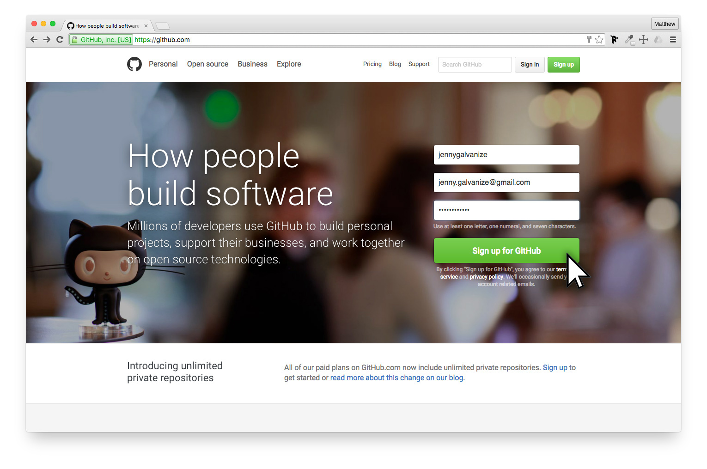

The Power of Verson Control
In these lessons, we'll be going over the following:
Once you understand GitHub a bit better, you'll be provided sample files to to practice working with GitHub on your own.

GitHub's is free for posting your files publically and you can keep your files private if you pay a monthly fee ($7/month). A lot of people that are new to this industry feel protective of their files and want to keep them to themselves. But in nearly all cases, there is little you are doing now that can't easily be recreated by other professionals and there are always other ways of stealing your code if necessary. Try not to get too wrapped up with this.
Nearly all web programmers today use GitHub, or a similar application, to help them do three things well:
Every edit of the project is saved so you can go back and track changes.
When working on more than one computer, this creates one location for all the files to be for easy editings.
When working with others, having a method you can both edit the same set of files it absolutely necessary.
Common works related to this subject that may be new for you:
Git — The open-source system used for version control. Created by Linus Trovalds in 2005, who also created Linux.
GitHub — A company that created an easy way to manage Git and the name of their software.
GitHub.com — The website where users can view all code projects online.
GitHub Desktop — An application that is installed on your computer which is the easiest way to post code to GitHub.com.
Repository — Is the project's folder and all the files, documentation, and versions saved.
Repo — Short for repository
Commit — Fancy term used referring to saving the latest changes to a new version.
Before having you jump into GitHub, here is an overview of the development process to help you understand how all of this works.
Jenny has been learning HTML & CSS to create her first web page. As the web site has been growing, she now wants to share it online. If she shares her files on GitHub, not only can she share her files on the web, but every change she submits online is saved in case she needs to go back and reference older code.
There are two ways that Jenny can manage her files on GitHub.
The easier way to get started working with GitHub is to download the free app which monitors any changes to the web files to allow web developers an easy technique to update all new changes to the website.
The Terminal is a free program (already installed on Macs) that allows web developers a way to type and execute text based commands instead of using graphical interfaces. Although this method is more complicated to to initally learn, most professional web developers use this method because it is much faster to accomplish certain tasks.
For now, Jenny is using GitHub Desktop to manage her files because it is easier to start with. Once she is comfortable with the basics, she'll push herself to use Terminal.
Later in the lessons, you'll get the opprotunity to download a sample web site and upload it to your own GitHub account using GitHub Desktop.
Once Jenny has published her first repository, she has it in two places:
Local repository on your computer — Jenny can work on this repository without an Internet connection using GitHub Desktop. As she gets to certain steps in your project development, she can commit (save) here changes onto GitHub.com
Remote repository on GitHub.com — Her project will be stored online so she can access it from any other computer or even send friends links to her repository on GitHub.com so they can see her code and make new reversions with changes that she can review.
Here is a copy of Jenny's first repo: https://github.com/jennygalvanize/Pizza
Here is the URL of the web page itself: https://jennygalvanize.github.io/pizza/
As Jenny continues to make updates to the local files on her computer, she can continue to commit these changes to her online repo.
If for any reason her work computer failed, she simply can download her entire project back to any computer.
GitHub is not just for personal management of files, but allows great access when working with teams of people, or even building off projects from people you don't even know.
Here is some new tech terms that relate to advanced techniques you can use GitHub for.
When you are ready to practice working with GitHub on your own, continue to the next lesson to learn how to manage a simple web project on your own GitHub account.